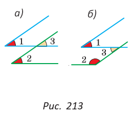
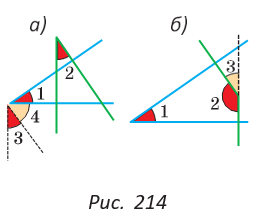

§ 18*. Углы с соответственно параллельными и соответственно перпендикулярными сторонами
Углы с соответственно параллельными сторонами или равны (если оба острые или оба тупые), или в сумме составляют 180° (если один острый, а другой тупой).
|  |
1) Острые углы 1 и 2 (рис. 213, а) — это углы с соответственно параллельными сторонами. Используя рисунок, докажите самостоятельно, что углы 1 и 2 равны. 2) Острый угол 1 и тупой угол 2 (рис. 213, б) — это углы с соответственно параллельными сторонами. Используя этот рисунок и результат пункта 1), докажите, что сумма углов 1 и 2 равна 180°. |
Углы с соответственно перпендикулярными сторонами или равны (если оба острые или оба тупые), или в сумме составляют 180° (если один острый, а другой тупой).
|  | Доказательство. 1) Острые углы 1 и 2 — это углы с соответственно перпендикулярными сторонами (рис. 214, а). Построим острый угол 3 в вершине угла 1, стороны которого параллельны сторонам угла 2. Стороны угла 3 перпендикулярны сторонам угла 1 (прямая, перпендикулярная одной из параллельных прямых, перпендикулярна и другой прямой). По предыдущей теореме ∠ 2 = ∠ 3. Поскольку угол 1 и угол 3 дополняют угол 4 до 90°, то ∠ 1 = ∠ 3. Значит, ∠ 1 = ∠ 2. |
2) Острый угол 1 и тупой угол 2 — это углы с соответственно перпендикулярными сторонами (рис. 214, б). Используя этот рисунок и результат пункта 1), докажите самостоятельно, что сумма углов 1 и 2 равна 180°.
|
|